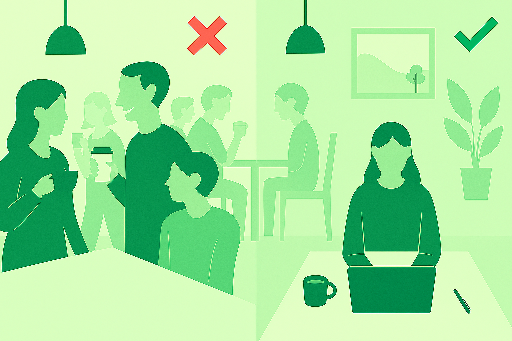

Werken op een openbare plek zoals een café
of bibliotheek vraagt soms om nét even een andere aanpak dan thuis of op kantoor.
Door rekening te houden met je omgeving en slim te werken,
maak je het niet alleen prettig voor jezelf maar ook voor de mensen om je heen.
Hieronder vind je onze belangrijkste adviezen.
Houd rekening met anderen
Je bent vaak te gast in een ruimte die niet exclusief voor werk bedoeld is.
Daarom is het belangrijk om bewust om te gaan met je aanwezigheid:
Bestel af en toe iets als je in een café werkt, zo steun je de zaak.
Houd telefoongesprekken kort en niet te luid.
Beperk het aantal spullen dat je verspreidt, zodat anderen ook plek hebben.

Kies je plek zorgvuldig
Niet elke werkplek is even geschikt voor elk type werk.
In een rustige bibliotheek werk je prettig aan taken die veel concentratie vragen,
terwijl een café juist geschikt kan zijn voor creatieve brainstorms of e-mails wegwerken.
Kies dus bewust waar je gaat zitten, afhankelijk van je doel.
Werk met een duidelijk ritme
Het kan verleidelijk zijn om eindeloos te blijven zitten,
maar het is gezonder en productiever om je tijd te structureren:
Plan blokken van 60-90 minuten - werk geconcentreerd en neem daarna een korte pauze.
Gebruik je pauze bewust - haal een drankje, maak een korte wandeling of rek je even uit.
Sluit af met een to-do check - zo voorkom je dat je werkdag “doorloopt” in je vrije tijd.